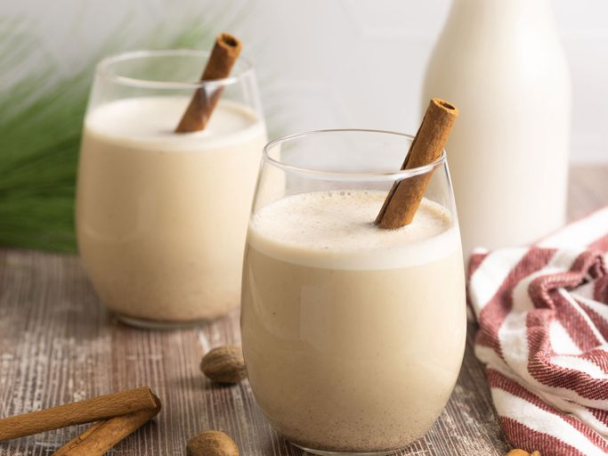

Coquito
Coquito is a creamy, tropical, Puerto Rican holiday drink with tons of coconut flavor. It's made with both evaporated and condensed milk, cream of coconut, spices, rum, and — in this version — egg yolks. It is always requested at my holiday gatherings. Sometimes I hide it in the fridge to keep for myself! Serve in glass cups and sprinkle with more cinnamon if desired. Feliz Navidad!
Ingredients
- 1 (12 fluid ounce) can evaporated milk
- 2 large egg yolks, beaten
- 1 (14 ounce) can cream of coconut
- 1 (14 ounce) can sweetened condensed milk
- ½ cup white rum
- ½ cup water
- 1 teaspoon vanilla extract
- ½ teaspoon ground cinnamon
- ¼ teaspoon ground cloves
Steps
- Gather all ingredients.
- Combine evaporated milk and egg yolks in the top of a double boiler over simmering water. Cook over the simmering water, stirring constantly, until mixture is thick enough to coat the back of a spoon, and reaches a temperature of 160 degrees F (71 degrees C).
- Transfer mixture to a blender. Add cream of coconut, sweetened condensed milk, rum, water, vanilla, cinnamon, and cloves; blend until combined, about 30 seconds.
- Pour into sterilized glass bottles and store in the refrigerator; serve cold or over ice, if desired.